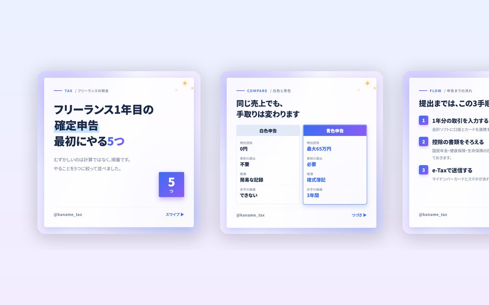
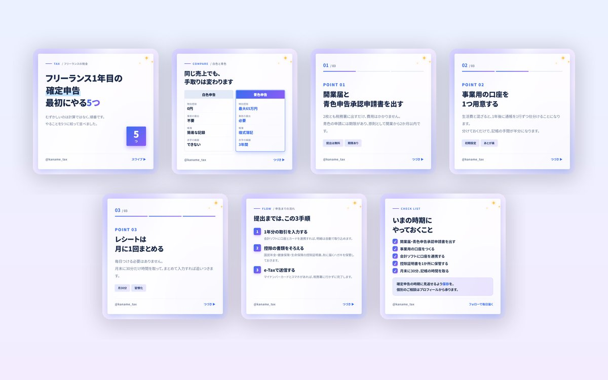
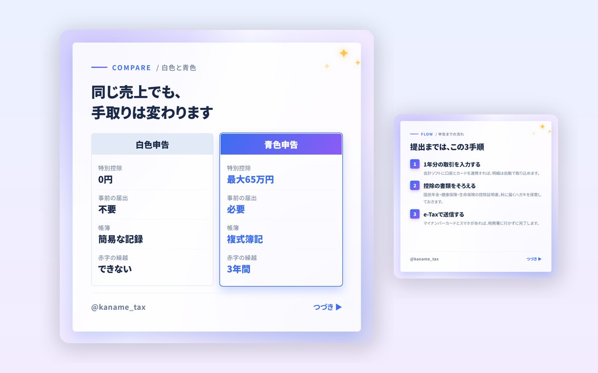

Instagram（投稿）／ 税理士事務所
かなめ会計事務所
フリーランス・個人事業主に向けて税金の情報を発信する事務所アカウントを想定した投稿です。 写真を1枚も使わず、比較表と手順図だけで成立させることを主題にしました。 硬い題材でもフィードで埋もれないよう、背景はグラデーションにしています。



| 種別 | Instagram投稿／架空の税理士事務所を想定した自主制作 |
|---|---|
| 担当範囲 | 企画・構成・コピーライティング・図解設計・テンプレート化 |
| 使用ツール | HTML・CSS（書き出し用テンプレート）／ Node.js |
| 規模 | カルーセル7枚 ／ スライドの型4種（表紙・比較表・本文・手順図） |
硬い題材を、フィードで止めてもらう
税金の話は、そのまま作ると書類のような画面になります。紺と白だけで組んだ初稿は、内容は正確でもフィードに並べたときスクロールの手が止まりませんでした。
変えたのは地と差し色です。背景を青からラベンダーへのグラデーションにし、数字とバッジはブルー（#3C6DF0）からパープル（#8B5CF6）のグラデーションで抜きました。カードは白のまま86%まで透かし、後ろのグラデーションをうっすら通しています。
いっぽうで、書体と文字色は変えていません。角ゴシックの太字、本文は3行まで。色で目を引いて、中身は硬いまま読ませる配分にしました。装飾を文字にまで広げると、税理士のアカウントとしての信頼感のほうが先に落ちます。
比較表は、結論のある側だけ色を変える
白色申告と青色申告を並べる比較表では、左右を対等に見せると読者は判断できません。すすめたい側（青色申告）だけ見出しをグラデーションで塗り、枠に光を回し、数値も青にしました。左側は淡いグレーに落としています。
項目は4つに絞りました。実際の違いはもっとありますが、スマホの画面で比較表を読ませるなら4行が限界です。「特別控除・事前の届出・帳簿・赤字の繰越」という、最初に知りたい順に並べています。
つまずいた点：比較表が1枚に収まらず、フッターが消えた
最初の書き出しで、比較表の下端がカードからはみ出し、アカウント名とページ送りが画面外に落ちていました。表は行数が増えるほど縦に伸びるため、他の型と同じ余白設定では収まりません。
見出しを50pxに落とし、表の見出し帯・行の上下余白・数値の文字サイズをそれぞれ2〜3割詰めました。あわせて表・手順・料金といった「一覧を載せる型」だけに別のクラスを与え、見出しを一段小さくするルールにしています。型ごとに上限が違うので、全体で1つの設定にはできません。
手順は、3つを超えたら分ける
申告までの流れは実際には10工程以上ありますが、1枚に載せるのは3つまでと決めました。番号を四角のバッジにして左端をそろえ、見出しと説明で2階層にしています。
4つ以上になる場合はスライドを分けます。読み切れる分量に収めることが、保存されるかどうかを決めるためです。
写真を使わないという選択
士業のアカウントでは、無理に写真を入れると急に広告らしくなります。オフィスの写真も、フリー素材の握手の写真も、内容と関係がありません。
このアカウントは写真を1枚も使わず、グラデーションと図だけで組みました。華やかさは背景と光で作っています。写真がないぶん、素材の準備なしに量産できるという運用上の利点もあります。
きらめきの装飾は右上に3つだけ。全面に散らすと一気に安く見えるので、置く場所を1か所に固定し、どの型でも本文と重ならない位置にしました。
実運用に足りていないもの
税制は毎年変わるため、数字を載せた投稿は年度ごとの見直しが必要です。65万円控除の要件（e-Tax提出か電子帳簿保存）のように、条件つきの数字も多くあります。実際の運用では、税理士本人の確認を通す工程を必ず挟む前提です。
また、このアカウントの目的は問い合わせの獲得ですが、今回作ったのは投稿画像だけです。プロフィール文、固定投稿、相談フォームへの導線までを含めて設計しないと、保存はされても相談にはつながりません。